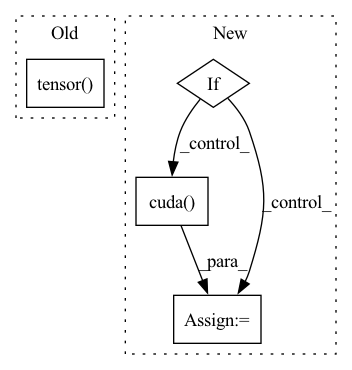

Pattern ID :33801

Before Change
neg_scores = self._compute_scores(h_embs=projected_heads_neg, r_embs=neg_rel_embs, t_embs=projected_tails_neg)
batch_entities = torch.cat([pos_heads.view(-1), pos_tails.view(-1), neg_heads.view(-1), neg_tails.view(-1)])
batch_entities = torch.tensor(torch.unique(batch_entities.cpu()), device=self.device)
batch_relations = torch.tensor(torch.unique(torch.cat([pos_rels.view(-1), neg_rels.view(-1)]).cpu()),
device=self.device)
loss = self.compute_loss(pos_scores=pos_scores, neg_scores=neg_scores, batch_entities=batch_entities,
After Change
batch_entities = torch.unique(batch_entities.cpu())
batch_relations = torch.unique(torch.cat([pos_rels.view(-1), neg_rels.view(-1)]).cpu())
if self.use_cuda:
batch_entities = torch.unique(batch_entities.cpu()).cuda()
batch_relations = torch.unique(torch.cat([pos_rels.view(-1), neg_rels.view(-1)]).cpu()).cuda()
loss = self.compute_loss(pos_scores=pos_scores, neg_scores=neg_scores, batch_entities=batch_entities,
batch_relations=batch_relations)
In pattern: SUPERPATTERN
Frequency: 3
Non-data size: 4
Instances
Fragment ID: 97019672
Project Name: pykeen/pykeen
Commit Name: 40319008994a0f1261e2a5e4292d77433801f2c5
Time: 2018-10-26
Author: ali-mehdi@live.de
File Name: src/pykeen/kg_embeddings_model/trans_h.py
M Class Name: TransH
N Class Name: TransH
M Method Name: forward(3)
N Method Name: forward(3)
M Parent Class: nn.Module
N Parent Class: nn.Module
M File Name: src/pykeen/kg_embeddings_model/trans_h.py
N File Name: src/pykeen/kg_embeddings_model/trans_h.py
M Start Line: 192
M End Line: 194
N Start Line: 163
N End Line: 201
'>
Before Change
self.sample_token_count = sample_token_count
self.start_token = torch.tensor([start_token]).to(torch.long)
self.pad_token = torch.tensor([1]).to(torch.long)
self.condition_factor = torch.tensor([10]).to(torch.float)
// if torch.cuda.is_available():
// self.start_token = self.start_token.cuda()
// self.pad_token = self.pad_token.cuda()
After Change
self.zero_prob = torch.zeros([1])
self.token_indices = torch.arange(self.sample_token_count)
self.start_token = torch.tensor([start_token]).to(torch.long)
if torch.cuda.is_available():
self.zero_prob = self.zero_prob.cuda()
self.token_indices = self.token_indices.cuda()
self.start_token = self.start_token.cuda()
def decode_step(self,
'>
Fragment ID: 97019673
Project Name: kuprel/min-dalle
Commit Name: 17c96fe110fad3d48ea591dcd46475f521499770
Time: 2022-06-28
Author: brkuprel@gmail.com
File Name: min_dalle/models/dalle_bart_decoder_torch.py
M Class Name: DalleBartDecoderTorch
N Class Name: DalleBartDecoderTorch
M Method Name: __init__(11)
N Method Name: __init__(11)
M Parent Class: nn.Module
N Parent Class: nn.Module
M File Name: min_dalle/models/dalle_bart_decoder_torch.py
N File Name: min_dalle/models/dalle_bart_decoder_torch.py
M Start Line: 127
M End Line: 129
N Start Line: 129
N End Line: 161
'>
Before Change
image_token = self.start_token
for i in range(self.sample_token_count):
token_index = torch.tensor([i]).to(torch.long)
// if torch.cuda.is_available(): token_index = token_index.cuda()
probs, keys_values_state = self.decode_step(
text_tokens = text_tokens,
After Change
) -> LongTensor:
image_tokens: List[LongTensor] = []
keys_values_state = torch.zeros(self.keys_values_state_shape)
if torch.cuda.is_available():
keys_values_state = keys_values_state.cuda()
image_token = self.start_token
for i in range(self.sample_token_count):
token_index = self.token_indices[i:i+1]
'>
Fragment ID: 97019675
Project Name: kuprel/min-dalle
Commit Name: 17c96fe110fad3d48ea591dcd46475f521499770
Time: 2022-06-28
Author: brkuprel@gmail.com
File Name: min_dalle/models/dalle_bart_decoder_torch.py
M Class Name: DalleBartDecoderTorch
N Class Name: DalleBartDecoderTorch
M Method Name: forward(3)
N Method Name: forward(3)
M Parent Class: nn.Module
N Parent Class: nn.Module
M File Name: min_dalle/models/dalle_bart_decoder_torch.py
N File Name: min_dalle/models/dalle_bart_decoder_torch.py
M Start Line: 205
M End Line: 222
N Start Line: 206
N End Line: 212